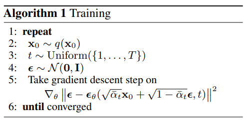
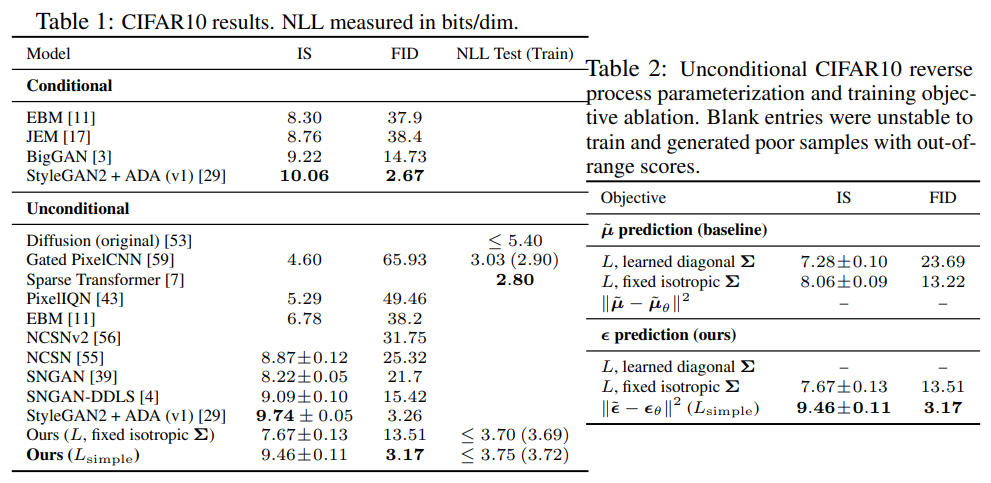
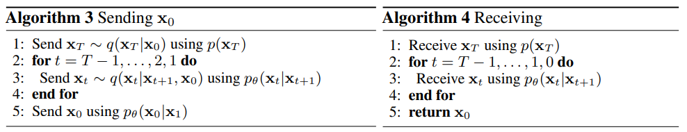
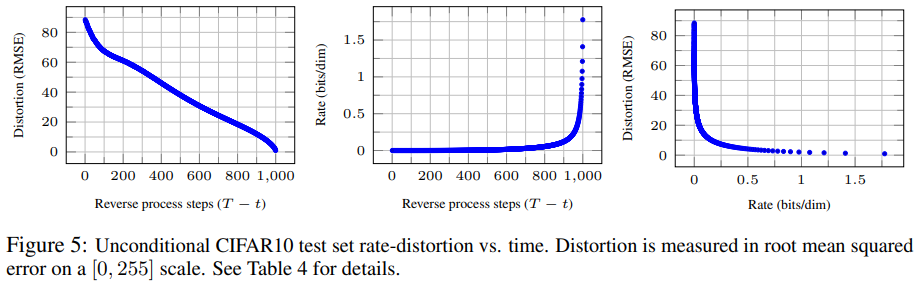

A diffusion model is a parametrized Markov chain trained using variational inference. It is learned to reverse a diffusion process which is a Markov chain that adds noise(forward process). In the forward process, if we add Gaussian noise, then the reverse process(sampling chain) can be expressed by Gaussian distribution too. As a result, for sampling chain xT→xT−1→⋯→x0, p(xt−1∣xt) can be trained as a Gaussian.
The theoretical basis for this comes from research on Langevin dynamics, which suggests that when sufficiently small amounts of Gaussian noise are added during the forward process, the reverse process can also be approximated by Gaussian distributions.
DDPM doesn’t have competitive log likelihoods, which shows how well the model learns the true distribution, despite its high sample quality.
Background
Diffusion models are latent variable models: pθ(x0):=∫pθ(x0:T)dx1:T, where x1,⋯,xT of x0∼q(x0).
The joint distribution pθ(x0:T) is called reverse process.
Starting at p(xT)=N(xT;0,I):
pθ(x0:T):=p(xT)t=1∏Tpθ(xt−1∣xt), where pθ(xt−1∣xt):=N(xt−1;μθ(xt,t),Σθ(xt,t))(1)
The approximate posterior q(x1:T∣x0) is called forward process(diffusion process), which adds Gaussian noise to the data according to a variance schedule β1,⋯,βT.
q(x1:T∣x0):=t=1∏Tq(xt∣xt−1), where q(xt∣xt−1):=N(xt;1−βtxt−1,βtI)(2)
The reverse process learns the transition distributions between latent variables leading to the target data x0. Since the target distribution pθ(x0) can be obtained by marginalizing the joint distribution over the latent variables, we train the reverse process to model these transitions. During training, the forward process is used as a reference distribution to guide the learning of the reverse process.
We train the model to optimize the variational bound on negative log likelihood:
Note that marginalization depends only on the function variables in expectation: Eq(x0:T)[f(x0)]=Eq(x0)[f(x0)], since other variables are integrated to 1.
where μ~t(xt,x0)=1−αˉtαˉt−1βtx0+1−αˉtαt(1−αˉt−1)xt and β~t=1−αˉt1−αˉt−1βt(7)
Thus we can calculate (5) and all KL divergences in (5) are comparisons between Gaussians, so that they can be calculated by Rao-Backwellized fashion with closed form like VAE.
Diffusion models and denoising autoencoders
Forward process
The forward process variances βt are learnable by reparametrization, but in practice, we fix them to constants.
So q has no learnable parameters, LT is a constant. Thus we ignore LT during training.
Reverse process
For pθ(xt−1∣xt):=N(xt−1;μθ(xt,t),Σθ(xt,t)), we set Σθ(xt,t)=σt2I to untrained constants. Experimentally, both σt2=βt and σt2=β~t had similar results.
Since KL divergence in Lt−1 compares between two Gaussians, we can calculate analytically:
In VAE, discretization is achieved by directly modeling the decoder distribution as a Bernoulli distribution. In contrast, DDPM uses Gaussian distributions for computational convenience and because the reverse process can be approximated by Gaussian transitions when sufficiently small amounts of Gaussian noise are added during the forward process. Therefore, DDPM performs discretization by integrating the Gaussian probability density over intervals corresponding to discrete pixel values.
Simplified training objective
The variational bound consisting of (12) and (13) is already differentiable w.r.t. θ.
However, for better sample quality and simpler implement, we simply the variational bound:
From (12), Lt−1 has weight 2σt2αt(1−αˉt)βt2 depending time t.
We let t as uniform distribution to make consistent weights. Also, for t=1 case L0 in the discrete decoder (13) is approximated by MSE together.
Since the original variational bound assigns relatively large weights to small t, where the noise level is low, the simplified objective assigns equal weights across all timesteps to place more emphasis on denoising tasks at larger t.

Experiments
For reverse process, we use a U-Net backbone. Parameters are shared across time, so we use the transformer sinusoidal positional encoding.
Sample quality

Reverse process parametrization and training objective ablation
In Table 2, we find that (14) can be trained by MSE loss function, since mean has very small difference but ϵ has small variance so that we can calculate MSE effectively.
Progressive coding

KL divergence can be interpreted as the amount of information the receiver needs to reconstruct the original sample given what they already know.
The sender transmits xT,⋯,x0 in sequence, and the receiver reconstructs the sample using the received information. The amount of information required at each step can be measured by KL divergence.
The receiver can calculate the partial information xt at any time t:
x0≈x^0=(xt−1−αˉtϵθ(xt))/αˉt(15)
Thus we can interpret DDPM as a process of progressively recovering information.

We can see that the distortion rate decreases steeply in the early steps. This suggests that DDPM first reconstructs the overall structure of an image and then progressively recovers finer details.
This result can also be observed in the following figure.